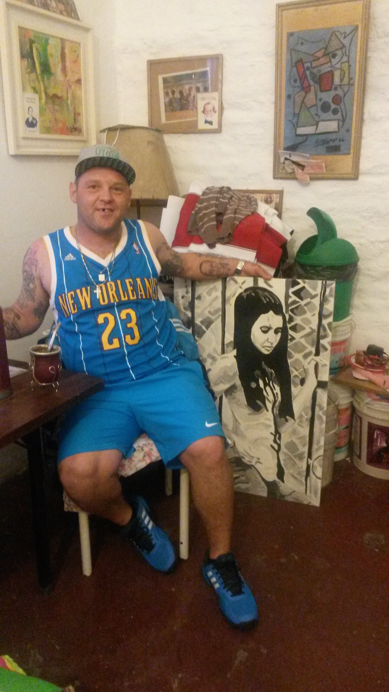

Por Pepo Castiñeiras (fundador de los gedes)
Música de protesta

La cumbia villera nació con Gonzalo Ferrer y Pablo Lescano. Yo vivía en el barrio La Esperanza a unas cuadras de donde ensayaba Amar Azul y me mandaba a los ensayos. Como yp era caradura, Pablito me propuso cantar en un grupo. Había grabado un par de coros para Damas Gratis y después me junté con Pablito en su casa y salió el primer tema, Soy re gede, que explotó. Cuando terminamos de grabar nuestro disco con Los Gedes en Noviembre del 2001, explotó la Argentina. Nosotros sabíamos que se iba a pudrir y quedamos en medio de todo eso, sin saber si íbamos a sacar el disco.
Yo estaba re loco en ese momento, me encantaba todo lo que me estaba pasando, no la podía creer. Antes laburaba de limpieza en Ciudad Universitaria hasta que empezamos a salir a tocar.
En las canciones contaba lo que veía que pasaba en mi barrio, no era una apología de nada, simplemente un relato. Una expresión cultural, como cualquier otra. Las letras de rock también hablan de drogas y mujeres, solamente que con un léxico distinto al nuestro. Lo que escribo es lo que me pasa, tanto en las letras más en joda como las que son más testimoniales. Tal vez yo puedo contar una historia de una manera más cruda que Andrés Calamaro.
La cumbia villera es la cumbia testimonial del 2001. Así como hubo censura en la época militar, nosotros también fuimos censurados. Tocábamos pero no salíamos en la tele y perdimos trabajo. Al prohibir la cumbia villera aniquilaron la protesta. Si no le das difusión a la música de protesta todo va a sonar re lindo. Nosotros cantábamos lo que pasaba en los barrios, lo que cualquier pibe flasheaba con su vida, lo que la gente tenía que salir a hacer porque no había un mango.
Hay mucha gente de plata que escucha cumbia villera en un boliche porque les permite liberarse y para ponerse a la par de cualquier persona. No pueden escucharla en su casa porque está mal visto porque no pertenece a su clase social.
Soy oficialista y banco a la presidenta a morir, aunque me da bronca que en los actos de conmemoración no toquen grupos de cumbia. Se tendría que dar un poco más de cabida y desprejuiciar lo que es el mundo de la cumbia villera.